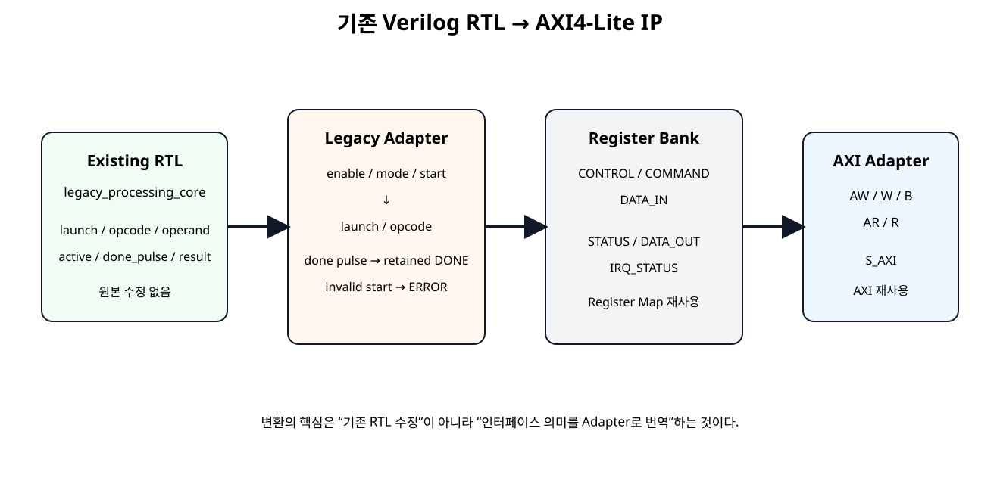
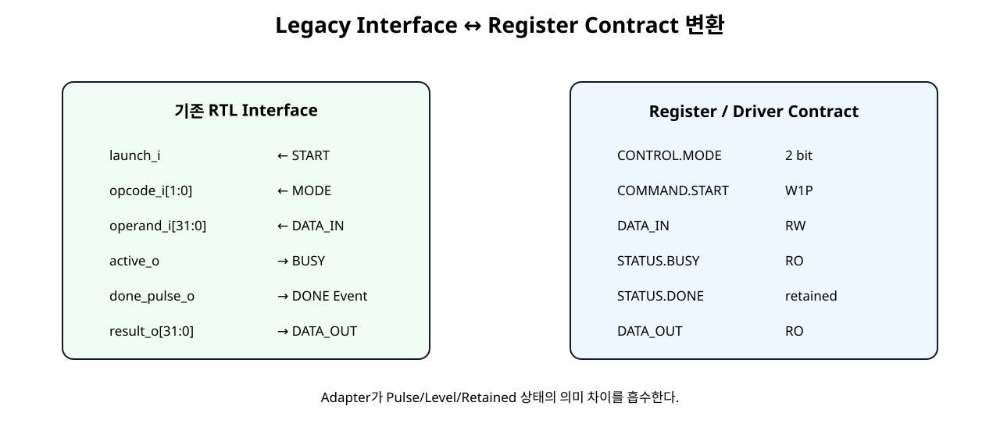
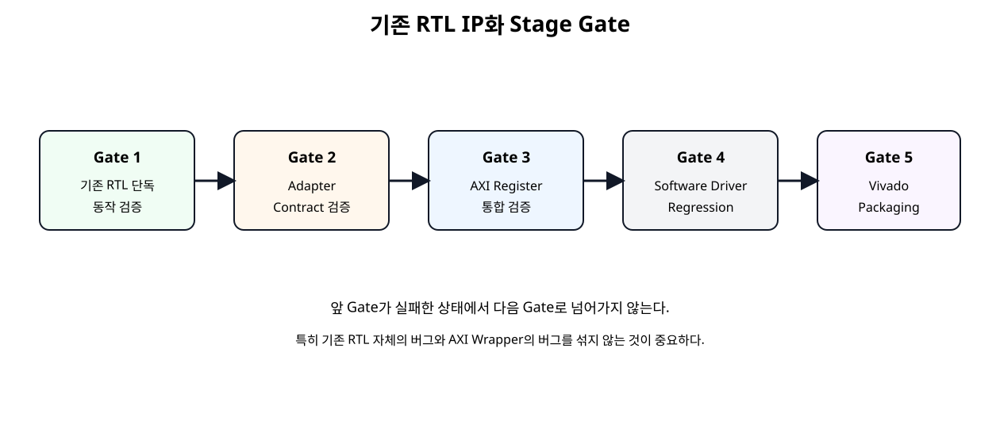

원본
기존 RTL의 기능·Timing·Interface를 먼저 독립적으로 보존한다.
Basys3 SoC + NPU · SoC 17
이미 정상 동작하는 독립 Verilog RTL은 가능한 한 수정하지 않는다. 기존 Core의 기능 Interface를 Adapter로 Register Contract에 맞추고, SoC 11~16에서 만든 AXI4-Lite/Register/Driver 구조를 재사용하여 Vivado Custom IP로 승격한다.
기존 RTL의 기능·Timing·Interface를 먼저 독립적으로 보존한다.
Pulse, Level, 상태 유지 방식의 차이를 변환한다.
기존 AXI/Register/Driver 자산을 재사용해 IP Catalog 자산으로 만든다.
IP화의 핵심을 “기존 RTL을 AXI 코드로 다시 작성하는 것”이 아니라 기존 기능 RTL과 Bus/Software Interface를 분리해 연결하는 것으로 이해한다.
| 기존 RTL 내부에 AXI 추가 | Adapter 방식 |
|---|---|
| 기능과 Bus가 강하게 결합됨 | 기능 RTL 독립성 유지 |
| 원래 검증 결과를 다시 의심해야 함 | 원본 Regression 가능 |
| 다른 Bus로 재사용하기 어려움 | AXI 외 다른 Wrapper도 가능 |
| 기능 수정과 Interface 수정이 섞임 | 문제 위치를 분리하기 쉬움 |
기존 RTL에 실제 버그가 없는 한 AXI 때문에 내부 알고리즘을 다시 작성하지 않는다.
이번 장에서는 AXI를 전혀 모르는 legacy_processing_core를 기존 RTL 예제로 사용한다. 교육용 예제이지만 구조는 UART Core, PWM Core, DSP Core, Sensor Controller, NPU Datapath 등에도 그대로 적용할 수 있다.
| Port | 의미 |
|---|---|
launch_i | 1 Clock 작업 시작 요청 |
opcode_i[1:0] | 처리 Mode |
operand_i[31:0] | 입력 Data |
active_o | 처리 중 Level |
done_pulse_o | 완료 1-Clock Pulse |
result_o[31:0] | 결과 Data |
| 방향 | 신호 |
|---|---|
| legacy_processing_core 입력 | launch_i / opcode_i / operand_i |
| legacy_processing_core 출력 | active_o / done_pulse_o / result_o |
이 Core에는 AXI Address, Register Offset, Software Driver 개념이 없다. 이 상태를 유지하는 것이 재사용의 출발점이다.

SoC 11부터 사용한 Register Map을 그대로 유지한다.
| Offset | Register | 기존 RTL 연결 |
|---|---|---|
0x00 | CONTROL | ENABLE / MODE |
0x04 | STATUS | BUSY / DONE / ERROR |
0x08 | COMMAND | START / CLEAR |
0x0C | IRQ_STATUS | DONE / ERROR Event |
0x10 | DATA_IN | operand_i |
0x14 | DATA_OUT | result_o |
0x18 / 0x1C | VERSION / ID | Driver Identification |

단순 Wire 이름 변경이 아니라 Signal의 시간적 의미까지 변환하는 것이 Adapter의 핵심이다.
| Register 쪽 | Adapter | Legacy Core 쪽 |
|---|---|---|
| START W1P | Enable/Busy 검사 | launch_i 1 Clock |
| MODE | 직접 Mapping | opcode_i |
| DATA_IN | 직접 Mapping | operand_i |
| BUSY | 직접 Mapping | active_o |
| DONE | Pulse를 Latched Status로 변환 | done_pulse_o |
| ERROR | Wrapper 정책으로 추가 | Legacy Core에는 없음 |
assign legacy_launch =
start_pulse_i &&
enable_i &&
!legacy_busy;Software START가 발생해도 Enable이 꺼져 있거나 Core가 Busy이면 Legacy Core에는 Launch를 전달하지 않는다.
assign busy_o = legacy_busy;Legacy Core의 active_o는 Register Contract의 STATUS.BUSY와 의미가 동일하므로 추가 상태 저장 없이 직접 연결한다.
Software Polling은 1 Clock Pulse를 놓칠 수 있으므로 Adapter가 DONE을 retained 상태로 바꾼다.
기존 Core가 Error Port를 갖고 있지 않아도 Software Contract에는 Error를 추가할 수 있다.
| 조건 | Adapter 동작 |
|---|---|
| ENABLE=0에서 START | ERROR + ERROR IRQ |
| BUSY=1에서 START | ERROR + ERROR IRQ, 기존 작업 유지 |
| 정상 START | Legacy Launch 전달 |
즉 Adapter는 기존 RTL의 기능 자체를 바꾸지 않으면서 Software 사용 규칙을 추가할 수 있다.
기존 Core가 START 시 operand/opcode를 내부 Capture하므로 작업 중 Software가 DATA_IN을 바꿔도 진행 중 연산에는 영향을 주지 않는다.
STATUS와 IRQ_STATUS 분리 원칙도 그대로 유지한다.
COMMAND.CLEAR는 DONE/ERROR Status를 지우고, IRQ_STATUS는 별도 W1C로 지운다.
최상위 custom_axi4lite_legacy_ip는 AXI/Register Module과 Legacy Adapter만 연결한다.
module custom_axi4lite_legacy_ip #(
parameter integer C_S_AXI_ADDR_WIDTH = 32,
parameter integer LEGACY_LATENCY_CYCLES = 4
)(
input wire s_axi_aclk,
input wire s_axi_aresetn,
input wire [C_S_AXI_ADDR_WIDTH-1:0] s_axi_awaddr,
input wire [2:0] s_axi_awprot,
input wire s_axi_awvalid,
output wire s_axi_awready,
input wire [31:0] s_axi_wdata,
input wire [3:0] s_axi_wstrb,
input wire s_axi_wvalid,
output wire s_axi_wready,
output wire [1:0] s_axi_bresp,
output wire s_axi_bvalid,
input wire s_axi_bready,
input wire [C_S_AXI_ADDR_WIDTH-1:0] s_axi_araddr,
input wire [2:0] s_axi_arprot,
input wire s_axi_arvalid,
output wire s_axi_arready,
output wire [31:0] s_axi_rdata,
output wire [1:0] s_axi_rresp,
output wire s_axi_rvalid,
input wire s_axi_rready
);
// Shell / Wrapper only:
// - no FSM
// - no arithmetic
// - no register policy
// - no legacy-core modifications
wire enable;
wire [1:0] mode;
wire start_pulse;
wire clear_pulse;
wire [31:0] data_in;
wire [1:0] irq_status;
wire busy;
wire done;
wire error;
wire irq_done_event;
wire irq_error_event;
wire [31:0] data_out;
custom_axi4lite_ip #(
.C_S_AXI_ADDR_WIDTH(C_S_AXI_ADDR_WIDTH)
) u_custom_axi4lite_ip (
.s_axi_aclk(s_axi_aclk),
.s_axi_aresetn(s_axi_aresetn),
.s_axi_awaddr(s_axi_awaddr),
.s_axi_awprot(s_axi_awprot),
.s_axi_awvalid(s_axi_awvalid),
.s_axi_awready(s_axi_awready),
.s_axi_wdata(s_axi_wdata),
.s_axi_wstrb(s_axi_wstrb),
.s_axi_wvalid(s_axi_wvalid),
.s_axi_wready(s_axi_wready),
.s_axi_bresp(s_axi_bresp),
.s_axi_bvalid(s_axi_bvalid),
.s_axi_bready(s_axi_bready),
.s_axi_araddr(s_axi_araddr),
.s_axi_arprot(s_axi_arprot),
.s_axi_arvalid(s_axi_arvalid),
.s_axi_arready(s_axi_arready),
.s_axi_rdata(s_axi_rdata),
.s_axi_rresp(s_axi_rresp),
.s_axi_rvalid(s_axi_rvalid),
.s_axi_rready(s_axi_rready),
.busy_i(busy),
.done_i(done),
.error_i(error),
.irq_done_event_i(irq_done_event),
.irq_error_event_i(irq_error_event),
.data_out_i(data_out),
.enable_o(enable),
.mode_o(mode),
.start_pulse_o(start_pulse),
.clear_pulse_o(clear_pulse),
.data_in_o(data_in),
.irq_status_o(irq_status)
);
legacy_core_controller_adapter #(
.LEGACY_LATENCY_CYCLES(LEGACY_LATENCY_CYCLES)
) u_legacy_core_controller_adapter (
.clk(s_axi_aclk),
.resetn(s_axi_aresetn),
.enable_i(enable),
.mode_i(mode),
.start_pulse_i(start_pulse),
.clear_pulse_i(clear_pulse),
.data_in_i(data_in),
.busy_o(busy),
.done_o(done),
.error_o(error),
.irq_done_event_o(irq_done_event),
.irq_error_event_o(irq_error_event),
.data_out_o(data_out)
);
endmodule
| Top에 허용 | Top에 두지 않음 |
|---|---|
| Wire 선언 | 기능 FSM |
| Module Instance | Address Decode |
| Port Connection | Error 정책 |
| Parameter 전달 | 산술/논리 Processing |
다음 RTL은 AXI/Register 변환 전 독립 Core이다. Packaging Source 안의 복사본과 바이트 단위로 동일하게 유지한다.
module legacy_processing_core #(
parameter integer LATENCY_CYCLES = 4
)(
input wire clk,
input wire rst_n,
// Legacy functional interface
input wire launch_i,
input wire [1:0] opcode_i,
input wire [31:0] operand_i,
output reg active_o,
output reg done_pulse_o,
output reg [31:0] result_o
);
reg [1:0] opcode_latched;
reg [31:0] operand_latched;
reg [7:0] cycles_left;
function [31:0] calculate_result;
input [31:0] value;
input [1:0] opcode;
begin
case (opcode)
2'b00: calculate_result = value;
2'b01: calculate_result = value + 32'd1;
2'b10: calculate_result = value << 1;
2'b11: calculate_result = ~value;
default: calculate_result = value;
endcase
end
endfunction
always @(posedge clk) begin
if (!rst_n) begin
opcode_latched <= 2'b00;
operand_latched <= 32'h0000_0000;
cycles_left <= 8'd0;
active_o <= 1'b0;
done_pulse_o <= 1'b0;
result_o <= 32'h0000_0000;
end else begin
// Legacy core reports completion as a one-clock pulse.
done_pulse_o <= 1'b0;
if (!active_o) begin
if (launch_i) begin
opcode_latched <= opcode_i;
operand_latched <= operand_i;
active_o <= 1'b1;
if (LATENCY_CYCLES <= 1) begin
cycles_left <= 8'd0;
end else begin
cycles_left <= LATENCY_CYCLES - 1;
end
end
end else begin
if (cycles_left != 0) begin
cycles_left <= cycles_left - 1'b1;
end else begin
result_o <= calculate_result(
operand_latched,
opcode_latched
);
active_o <= 1'b0;
done_pulse_o <= 1'b1;
end
end
end
end
endmodule
module legacy_core_controller_adapter #(
parameter integer LEGACY_LATENCY_CYCLES = 4
)(
input wire clk,
input wire resetn,
// Register-bank control inputs
input wire enable_i,
input wire [1:0] mode_i,
input wire start_pulse_i,
input wire clear_pulse_i,
input wire [31:0] data_in_i,
// Register-bank status / event outputs
output wire busy_o,
output reg done_o,
output reg error_o,
output reg irq_done_event_o,
output reg irq_error_event_o,
output wire [31:0] data_out_o
);
wire legacy_busy;
wire legacy_done_pulse;
wire [31:0] legacy_result;
wire legacy_launch;
/*
* The existing RTL is not modified.
* This adapter translates the register/controller contract into
* the legacy core's launch/opcode/operand interface.
*/
assign legacy_launch =
start_pulse_i &&
enable_i &&
!legacy_busy;
assign busy_o = legacy_busy;
assign data_out_o = legacy_result;
legacy_processing_core #(
.LATENCY_CYCLES(LEGACY_LATENCY_CYCLES)
) u_legacy_processing_core (
.clk(clk),
.rst_n(resetn),
.launch_i(legacy_launch),
.opcode_i(mode_i),
.operand_i(data_in_i),
.active_o(legacy_busy),
.done_pulse_o(legacy_done_pulse),
.result_o(legacy_result)
);
always @(posedge clk) begin
if (!resetn) begin
done_o <= 1'b0;
error_o <= 1'b0;
irq_done_event_o <= 1'b0;
irq_error_event_o <= 1'b0;
end else begin
// Event outputs are one-clock pulses.
irq_done_event_o <= 1'b0;
irq_error_event_o <= 1'b0;
// Software CLEAR only clears retained software-visible status.
if (clear_pulse_i) begin
done_o <= 1'b0;
error_o <= 1'b0;
end
if (start_pulse_i) begin
done_o <= 1'b0;
if (!enable_i) begin
error_o <= 1'b1;
irq_error_event_o <= 1'b1;
end else if (legacy_busy) begin
error_o <= 1'b1;
irq_error_event_o <= 1'b1;
end else begin
// Legal start. The legacy core receives legacy_launch.
error_o <= 1'b0;
end
end
if (legacy_done_pulse) begin
done_o <= 1'b1;
irq_done_event_o <= 1'b1;
end
end
end
endmodule
AXI Protocol과 Register Map은 SoC 12~15의 검증된 모듈을 그대로 사용한다.
IP화 전에 기존 RTL 자체의 기능을 독립 Testbench로 먼저 검증한다.
`timescale 1ns / 1ps
module tb_legacy_processing_core;
reg clk = 1'b0;
reg rst_n = 1'b0;
reg launch_i = 1'b0;
reg [1:0] opcode_i = 2'b00;
reg [31:0] operand_i = 32'h0;
wire active_o;
wire done_pulse_o;
wire [31:0] result_o;
integer errors = 0;
always #5 clk = ~clk;
legacy_processing_core #(
.LATENCY_CYCLES(4)
) dut (
.clk(clk),
.rst_n(rst_n),
.launch_i(launch_i),
.opcode_i(opcode_i),
.operand_i(operand_i),
.active_o(active_o),
.done_pulse_o(done_pulse_o),
.result_o(result_o)
);
task automatic run_case;
input [1:0] op;
input [31:0] value;
input [31:0] expected;
begin
wait (!active_o);
@(negedge clk);
opcode_i = op;
operand_i = value;
launch_i = 1'b1;
@(negedge clk);
launch_i = 1'b0;
wait (done_pulse_o === 1'b1);
if (result_o !== expected) begin
$display("FAIL: op=%0d in=%08h out=%08h expected=%08h",
op, value, result_o, expected);
errors = errors + 1;
end else begin
$display("PASS: op=%0d in=%08h out=%08h",
op, value, result_o);
end
@(posedge clk);
// (추가) 비차단 대입이 반영된 뒤 펄스 해제를 확인한다.
#1;
if (done_pulse_o !== 1'b0) begin
$display("FAIL: done_pulse_o wider than one clock");
errors = errors + 1;
end
end
endtask
initial begin
repeat (4) @(posedge clk);
rst_n = 1'b1;
repeat (2) @(posedge clk);
run_case(2'b00, 32'h12345678, 32'h12345678);
run_case(2'b01, 32'hFFFFFFFF, 32'h00000000);
run_case(2'b10, 32'h80000001, 32'h00000002);
run_case(2'b11, 32'hA5A55A5A, 32'h5A5AA5A5);
if (errors == 0) begin
$display("LEGACY PROCESSING CORE TEST: PASS");
end else begin
$display("LEGACY PROCESSING CORE TEST: FAIL (%0d errors)", errors);
end
#30;
$finish;
end
endmodule
두 번째 Testbench는 Legacy Core Port를 직접 제어하지 않고 AXI Register Transaction만 사용한다.
`timescale 1ns / 1ps
module tb_custom_axi4lite_legacy_ip;
localparam integer ADDR_W = 32;
localparam integer PROCESS_CYCLES_TB = 12;
reg clk = 1'b0;
reg resetn = 1'b0;
always #5 clk = ~clk;
reg [ADDR_W-1:0] awaddr;
reg [2:0] awprot;
reg awvalid;
wire awready;
reg [31:0] wdata;
reg [3:0] wstrb;
reg wvalid;
wire wready;
wire [1:0] bresp;
wire bvalid;
reg bready;
reg [ADDR_W-1:0] araddr;
reg [2:0] arprot;
reg arvalid;
wire arready;
wire [31:0] rdata;
wire [1:0] rresp;
wire rvalid;
reg rready;
integer error_count = 0;
reg [31:0] rd;
custom_axi4lite_legacy_ip #(
.C_S_AXI_ADDR_WIDTH(ADDR_W),
.LEGACY_LATENCY_CYCLES(PROCESS_CYCLES_TB)
) dut (
.s_axi_aclk(clk),
.s_axi_aresetn(resetn),
.s_axi_awaddr(awaddr),
.s_axi_awprot(awprot),
.s_axi_awvalid(awvalid),
.s_axi_awready(awready),
.s_axi_wdata(wdata),
.s_axi_wstrb(wstrb),
.s_axi_wvalid(wvalid),
.s_axi_wready(wready),
.s_axi_bresp(bresp),
.s_axi_bvalid(bvalid),
.s_axi_bready(bready),
.s_axi_araddr(araddr),
.s_axi_arprot(arprot),
.s_axi_arvalid(arvalid),
.s_axi_arready(arready),
.s_axi_rdata(rdata),
.s_axi_rresp(rresp),
.s_axi_rvalid(rvalid),
.s_axi_rready(rready)
);
task automatic expect32;
input [31:0] actual;
input [31:0] expected;
input [8*48-1:0] label;
begin
if (actual !== expected) begin
$display("FAIL: %0s actual=%08h expected=%08h",
label, actual, expected);
error_count = error_count + 1;
end else begin
$display("PASS: %0s = %08h", label, actual);
end
end
endtask
task automatic axi_write;
input [31:0] addr;
input [31:0] data;
input [3:0] strb;
begin
@(negedge clk);
awaddr = addr;
awvalid = 1'b1;
wait (awready === 1'b1);
@(negedge clk);
awvalid = 1'b0;
@(negedge clk);
wdata = data;
wstrb = strb;
wvalid = 1'b1;
wait (wready === 1'b1);
@(negedge clk);
wvalid = 1'b0;
bready = 1'b1;
wait (bvalid === 1'b1);
@(posedge clk);
@(negedge clk);
bready = 1'b0;
end
endtask
task automatic axi_read;
input [31:0] addr;
output [31:0] data;
begin
@(negedge clk);
araddr = addr;
arvalid = 1'b1;
wait (arready === 1'b1);
@(negedge clk);
arvalid = 1'b0;
rready = 1'b1;
wait (rvalid === 1'b1);
data = rdata;
@(posedge clk);
@(negedge clk);
rready = 1'b0;
end
endtask
task automatic clear_status_and_irq;
begin
axi_write(32'h00000008, 32'h00000002, 4'b0001);
axi_write(32'h0000000C, 32'h00000003, 4'b0001);
end
endtask
task automatic wait_done;
output [31:0] status_value;
integer k;
reg found;
begin
status_value = 32'h0;
found = 1'b0;
for (k = 0; k < 100; k = k + 1) begin
axi_read(32'h00000004, status_value);
if (status_value[1]) begin
found = 1'b1;
k = 100;
end
end
if (!found) begin
$display("FAIL: timeout waiting for DONE");
error_count = error_count + 1;
end
end
endtask
task automatic run_mode_test;
input [1:0] mode;
input [31:0] input_value;
input [31:0] expected_value;
reg [31:0] status_value;
reg [31:0] control_value;
begin
clear_status_and_irq();
control_value = 32'h00000001 | ({30'h0, mode} << 1);
axi_write(32'h00000000, control_value, 4'b1111);
axi_write(32'h00000010, input_value, 4'b1111);
axi_write(32'h00000008, 32'h00000001, 4'b0001);
wait_done(status_value);
if (!status_value[1] || status_value[0]) begin
$display("FAIL: final STATUS expected DONE=1 BUSY=0");
error_count = error_count + 1;
end
axi_read(32'h00000014, rd);
expect32(rd, expected_value, "DATA_OUT result");
axi_read(32'h0000000C, rd);
if ((rd & 32'h00000001) == 0) begin
$display("FAIL: DONE IRQ status not latched");
error_count = error_count + 1;
end else begin
$display("PASS: DONE IRQ status latched");
end
end
endtask
initial begin
awaddr = 0;
awprot = 0;
awvalid = 0;
wdata = 0;
wstrb = 0;
wvalid = 0;
bready = 0;
araddr = 0;
arprot = 0;
arvalid = 0;
rready = 0;
repeat (5) @(posedge clk);
resetn = 1'b1;
repeat (3) @(posedge clk);
$display("---- FIXED REGISTERS ----");
axi_read(32'h00000018, rd);
expect32(rd, 32'h00010000, "VERSION");
axi_read(32'h0000001C, rd);
expect32(rd, 32'h524D4150, "ID");
$display("---- DISABLED START -> ERROR ----");
axi_write(32'h00000008, 32'h00000001, 4'b0001);
repeat (3) @(posedge clk);
axi_read(32'h00000004, rd);
if ((rd & 32'h00000004) == 0) begin
$display("FAIL: STATUS.ERROR not set");
error_count = error_count + 1;
end else begin
$display("PASS: STATUS.ERROR set");
end
axi_read(32'h0000000C, rd);
if ((rd & 32'h00000002) == 0) begin
$display("FAIL: IRQ_STATUS.ERROR not set");
error_count = error_count + 1;
end else begin
$display("PASS: IRQ_STATUS.ERROR set");
end
$display("---- CLEAR STATUS ONLY ----");
axi_write(32'h00000008, 32'h00000002, 4'b0001);
axi_read(32'h00000004, rd);
expect32(rd, 32'h00000000, "STATUS after COMMAND.CLEAR");
axi_read(32'h0000000C, rd);
expect32(rd, 32'h00000002, "IRQ_STATUS remains latched");
axi_write(32'h0000000C, 32'h00000002, 4'b0001);
axi_read(32'h0000000C, rd);
expect32(rd, 32'h00000000, "IRQ_STATUS W1C clear");
$display("---- MODE 0 PASS-THROUGH ----");
run_mode_test(2'b00, 32'h12345678, 32'h12345678);
$display("---- MODE 1 ADD 1 ----");
run_mode_test(2'b01, 32'hFFFFFFFF, 32'h00000000);
$display("---- MODE 2 SHIFT LEFT ----");
run_mode_test(2'b10, 32'h80000001, 32'h00000002);
$display("---- MODE 3 BITWISE NOT ----");
run_mode_test(2'b11, 32'hA5A55A5A, 32'h5A5AA5A5);
$display("---- START WHILE BUSY -> ERROR ----");
clear_status_and_irq();
// Enable, mode 0, data input.
axi_write(32'h00000000, 32'h00000001, 4'b1111);
axi_write(32'h00000010, 32'hCAFEBABE, 4'b1111);
// First START launches the operation.
axi_write(32'h00000008, 32'h00000001, 4'b0001);
// Second START arrives before PROCESS_CYCLES_TB expires.
axi_write(32'h00000008, 32'h00000001, 4'b0001);
wait_done(rd);
axi_read(32'h00000004, rd);
if ((rd & 32'h00000004) == 0) begin
$display("FAIL: busy restart ERROR not retained");
error_count = error_count + 1;
end else begin
$display("PASS: busy restart ERROR retained");
end
axi_read(32'h00000014, rd);
expect32(rd, 32'hCAFEBABE, "original operation still completed");
axi_read(32'h0000000C, rd);
if ((rd & 32'h00000003) != 32'h00000003) begin
$display("FAIL: DONE+ERROR IRQ status expected");
error_count = error_count + 1;
end else begin
$display("PASS: DONE+ERROR IRQ status latched");
end
if (error_count == 0) begin
$display("SOC17 LEGACY RTL AXI IP TEST: PASS");
end else begin
$display("SOC17 LEGACY RTL AXI IP TEST: FAIL (%0d errors)",
error_count);
end
#50;
$finish;
end
endmodule
Disabled START, STATUS/IRQ 독립 Clear, Mode 0~3, Busy 중 재START를 Software 관점에서 검증한다.
Register Contract가 SoC 15와 동일하므로 Driver Source를 바꾸지 않는다.
기존 RTL 내부 Interface가 달라도 Register Contract가 같으면 상위 Software API를 재사용할 수 있다는 것이 핵심이다.
custom_regmap.h, custom_register_bank.v, axi4lite_slave_adapter.v는 SoC 15와 바이트 단위 동일하게 유지한다.
legacy_processing_ip_1_0/
├── hdl/
│ ├── legacy_processing_core.v
│ ├── legacy_core_controller_adapter.v
│ ├── axi4lite_slave_adapter.v
│ ├── custom_register_bank.v
│ ├── custom_axi4lite_ip.v
│ └── custom_axi4lite_legacy_ip.v
├── testbench/
│ ├── tb_legacy_processing_core.v
│ └── tb_custom_axi4lite_legacy_ip.v
├── drivers/
│ └── legacy_processing_v1_0/
│ └── src/
│ ├── custom_driver.c
│ ├── custom_driver.h
│ └── custom_regmap.h
├── examples/
│ ├── custom_driver_example.c
│ └── test_custom_driver_mock.c
├── doc/
│ └── README_PACKAGE.md
└── tcl/
├── prepare_legacy_ip_project.tcl
└── add_ip_repo.tcl
legacy_processing_core.v는 기존 RTL, legacy_core_controller_adapter.v는 변환 계층, 나머지 AXI/Register/Driver는 이전 단계 재사용 자산이다.
SoC 16과 같은 IP Packager 절차를 사용하고 Packaging Top만 custom_axi4lite_legacy_ip로 변경한다.
# SoC 17 - Prepare a Vivado project for packaging existing Verilog RTL as AXI IP
#
# The original legacy_processing_core.v is intentionally reused unchanged.
# Adapter and AXI/register wrappers are separate files.
#
# After this script:
# Tools > Create and Package New IP
# -> Package your current project
#
# Do not hand-create component.xml.
set script_dir [file dirname [file normalize [info script]]]
set ip_root [file normalize [file join $script_dir ".."]]
set work_dir [file normalize [file join $ip_root "_vivado_packaging_work"]]
file delete -force $work_dir
create_project -force soc17_legacy_rtl_ip \
$work_dir \
-part xc7a35tcpg236-1
set hdl_dir [file join $ip_root "hdl"]
set tb_dir [file join $ip_root "testbench"]
add_files -norecurse [list \
[file join $hdl_dir "legacy_processing_core.v"] \
[file join $hdl_dir "axi4lite_slave_adapter.v"] \
[file join $hdl_dir "custom_register_bank.v"] \
[file join $hdl_dir "custom_axi4lite_ip.v"] \
[file join $hdl_dir "legacy_core_controller_adapter.v"] \
[file join $hdl_dir "custom_axi4lite_legacy_ip.v"] \
]
set_property top custom_axi4lite_legacy_ip [current_fileset]
update_compile_order -fileset sources_1
add_files -fileset sim_1 -norecurse [list \
[file join $tb_dir "tb_legacy_processing_core.v"] \
[file join $tb_dir "tb_custom_axi4lite_legacy_ip.v"] \
]
set_property top tb_custom_axi4lite_legacy_ip [get_filesets sim_1]
update_compile_order -fileset sim_1
puts ""
puts "SoC 17 project prepared."
puts "Packaging top: custom_axi4lite_legacy_ip"
puts "Original legacy RTL was not modified."
Vivado 2026.1은 Current Project 파일을 수집해 Custom IP로 Packaging할 수 있으며, Top HDL을 Parsing해 Port/Interface를 구성한다.
Module Reference로 기존 RTL을 직접 BD에 넣을 수도 있지만 Project마다 원본 RTL 파일을 다시 제공해야 한다. 반복 배포가 목적이라면 Custom IP Packaging이 더 독립적인 자산이 된다.

| 질문 | 확인 |
|---|---|
| 기존 RTL Clock Domain은? | AXI Clock과 동일한가, CDC가 필요한가 |
| Start는 Pulse인가 Level인가? | W1P를 그대로 연결 가능한가 |
| Done은 Pulse인가 Level인가? | Software가 놓치지 않도록 Latched Status가 필요한가 |
| Input은 언제 Capture하는가? | START 전후 Software Write 영향 확인 |
| Output은 언제 Valid한가? | DONE과 DATA_OUT Timing 관계 |
| Error Port가 있는가? | 없다면 Adapter 정책으로 무엇을 추가할지 결정 |
| Reset Polarity는? | Wrapper에서 단순 연결 가능한가 |
다음과 같은 기존 RTL은 단순 Wire 연결보다 별도 Adapter가 중요하다.
이 경우에도 기존 Core를 고치기보다 Adapter의 책임을 명확히 늘리는 방향을 우선한다.
| 증상 | 원인 후보 | 확인 |
|---|---|---|
| 원본 RTL 단독 TB부터 실패 | AXI 문제가 아님 | Gate 1에서 기존 RTL 수정/검증 |
| Standalone은 정상, AXI에서 실패 | Adapter Contract 오류 | Pulse/Level/Timing 변환 확인 |
| DONE을 Software가 못 봄 | 1-Clock Pulse 직접 연결 | retained DONE / IRQ_STATUS |
| 작업 중 입력 변경이 결과에 영향 | 기존 Core Capture 시점 오해 | START 시점 Timing 확인 |
| Busy 중 START가 Core에 전달됨 | Adapter Guard 누락 | !legacy_busy |
| Driver 수정이 필요함 | Register Contract가 바뀜 | 가능하면 기존 Map 유지 |
| Top에 기능 로직이 증가함 | Adapter와 Wrapper 역할 혼합 | 기능 정책은 Adapter로 이동 |
| IP Catalog 재사용 때 Source 누락 | Module Reference 방식 혼동 | Packaged IP File Group 확인 |
custom_axi4lite_legacy_ip로 정의했다.| 문서 | 확인 항목 |
|---|---|
| AMD UG1118 · Packaging Your Current Project · 2026.1 | 기존 Project Source를 Custom IP로 Packaging |
| AMD UG1118 · Ports and Interfaces · 2026.1 | Top HDL Parsing, Port/Interface 자동 추론 |
| AMD UG1118 · Importing Ports from Top-Level HDL · 2026.1 | Top HDL Port 변경 시 Re-import |
| AMD UG994 · Reusing a BD Containing Module Reference · 2026.1 | Module Reference 재사용 시 RTL Source 파일을 Project에 별도 추가해야 함 |
| AMD UG994 · Packaging a Block Design · 2026.1 | 검증된 Design을 재사용 IP로 Packaging |